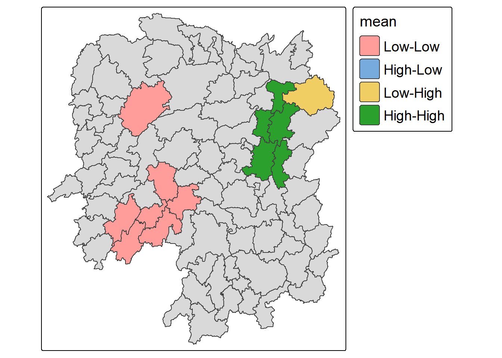

pacman::p_load(sf,sfdep,tmap,tidyverse)In class exercise 5
Getting started
loading in packages
Joining
# Hunan county boundary layer
hunan <- st_read("data/geospatial/hunan/Hunan.shp")Reading layer `Hunan' from data source
`C:\cjmheidii\ISSS626 - Geospatial\Hands-on_Ex\data\geospatial\hunan\Hunan.shp'
using driver `ESRI Shapefile'
Simple feature collection with 88 features and 7 fields
Geometry type: POLYGON
Dimension: XY
Bounding box: xmin: 108.7831 ymin: 24.6342 xmax: 114.2544 ymax: 30.12812
Geodetic CRS: WGS 84#This is the csv Hunan local development indicators
#This will be in the R dataframe class
hunan_2012<- read_csv("data/aspatial/Hunan_2012.csv")Rows: 88 Columns: 29
── Column specification ────────────────────────────────────────────────────────
Delimiter: ","
chr (2): County, City
dbl (27): avg_wage, deposite, FAI, Gov_Rev, Gov_Exp, GDP, GDPPC, GIO, Loan, ...
ℹ Use `spec()` to retrieve the full column specification for this data.
ℹ Specify the column types or set `show_col_types = FALSE` to quiet this message.hunan_GDPPC <- left_join(hunan,hunan_2012) %>%
select(1:3, 7, 15,16,31,32)Joining with `by = join_by(County)`Global measures of spatial Association
1. Deriving Queen Contiguity weights: sfdep methods
wm_q <- hunan_GDPPC %>%
mutate(nb=st_contiguity(geometry),
wt=st_weights(nb,
style = "W"),
.before=1)2. Computing Global Moran’I
in the code chunk below, global_moran() function is used to compute the moran’s I value. Different from spdep package, the output is a tibble data.frame.
moranI<-global_moran(wm_q$GDPPC,
wm_q$nb,
wm_q$wt)
glimpse(moranI)List of 2
$ I: num 0.301
$ K: num 7.64performing global Moran permutation test
In practice, Monte carlo simulation should be used to perform statistical test. For sfdep its supposed by global_moran_perm() function.
set.seed(1234)
global_moran_perm(wm_q$GDPPC,
wm_q$nb,
wm_q$wt,
nsim=99)
Monte-Carlo simulation of Moran I
data: x
weights: listw
number of simulations + 1: 100
statistic = 0.30075, observed rank = 100, p-value < 2.2e-16
alternative hypothesis: two.sided
Note
The statistical report shows the p value is smaller than alpha value of 0.05. Hence we have enough statistical evidence to reject the null hypothesis that the spatial distribution of GDP per capita resembles a random distribution.
Because Moran’s I statistic is greater than 0 (positive spatial autocorrelation) it confirms a clustered pattern. This means similar values are near each other (High GDP per Capita countries are next to each other high GDP counties and low next to low.
3. Computing Local Morans I
In this section you will learn how to compute local moran I of GDPPC at county level by using Local_moran() of sfdep package
lisa<-wm_q %>%
mutate(local_moran=local_moran(
GDPPC,nb,wt,nsim=99),
.before=1)%>%
unnest(local_moran)plotting LISA map
in the lisa sf data.frame we can find 3 fields containig the LISA categories : mean, median, pysal. Calssification in mean will be used as shown in code chunk below.
lisa_sig<-lisa%>%
filter(p_ii_sim<0.05)
tmap_mode("plot")ℹ tmap modes "plot" - "view"
ℹ toggle with `tmap::ttm()`tm_shape(lisa)+
tm_polygons()+
tm_borders(fill_alpha =0.05) +
tm_shape(lisa_sig)+
tm_polygons(fill="mean",
fill.legend = tm_legend(
text.size=1.15,
width=6))+
tm_borders(fill_alpha=0.4)+
tm_layout(legend.title.size=1.25)